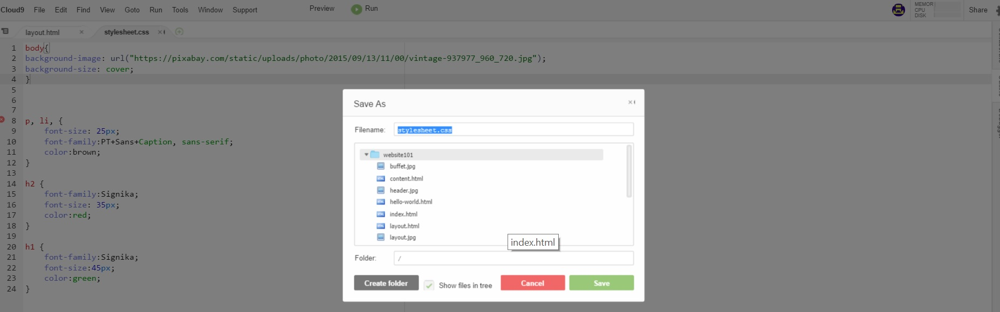
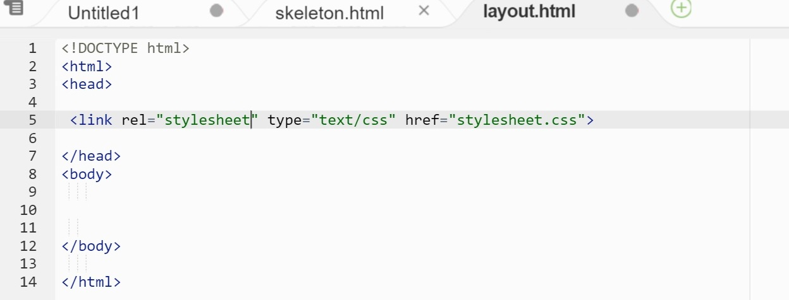
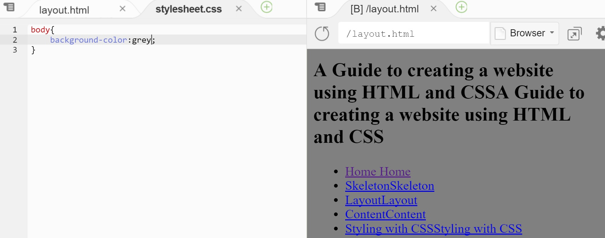
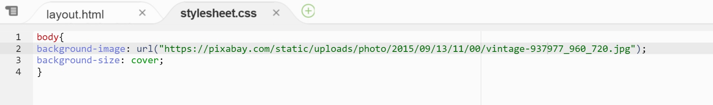
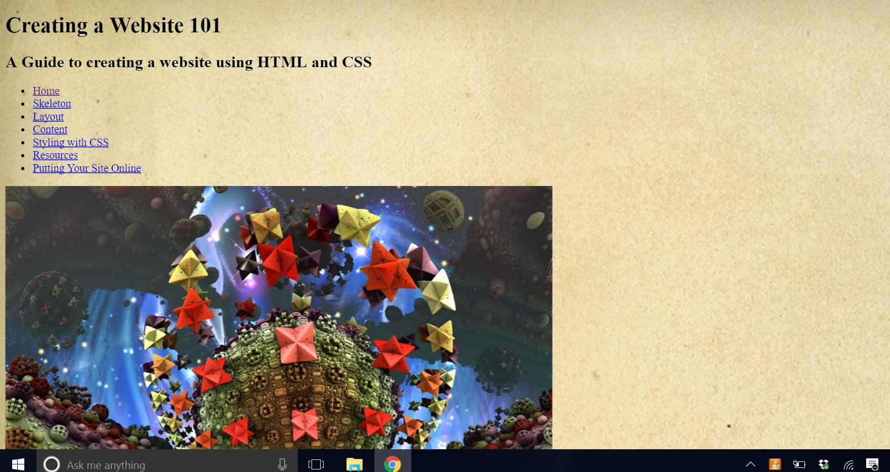
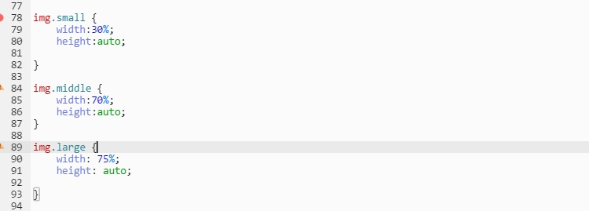
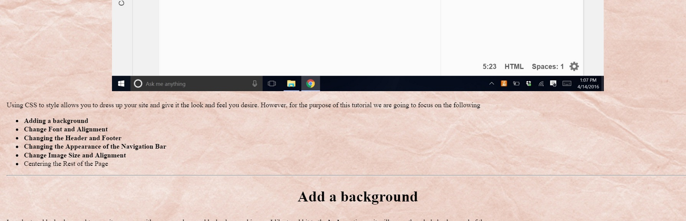
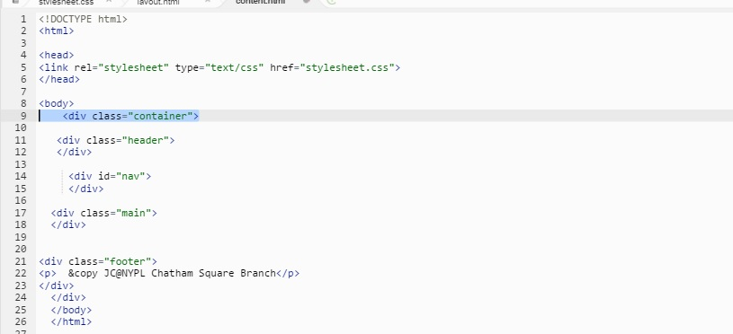

Designing Your Webpage with CSS
Now that you have your tags placed around your content, you can use the tags to style your webpage.
First we need to create a css file. Make sure to put the extension at the end as .css.

Then we need to link this the css file to our html page. We do this by adding the following to the <head> section of our html.

Using CSS to style allows you to dress up your site and give it the look and feel you desire. However, for the purpose of this tutorial we are going to focus on the following
- Add a Background
- Change Font and Alignment
- Change the Header and Footer
- Change the Appearance of the Navigation Bar
- Change Image Size and Alignment
- Center the Rest of the Page
Add a background
In order to add a background to our site, you can either use a color or add a background image. I like to add it to the body section as it will cover the whole background of the page.
In order to add color to our background, you can use the following tag

If you want to add an image link as your background you can do the following


You can also download an image, save it to your work space folder, and link the image in your stylesheet. For this webpage, I downloaded the image and saved it to my Image folder. I linked it as follows
The cover used in background-image is to tell CSS to stretch the image to the full width of the webpage. Alternatively, you can also change the image size using the width as follows
Changing Font and Alignment
To give style to fonts, you can change the type of font you want in the css stylesheet. you can find the type of font you want first at www.w3schools.com . For the purpose of my website, I want to have the same fonts for the <p> and <li> tags. The <h2> will have its own font and the <h1>will also have its own font. We will also add the font size and color to the document at the same time.
You can also align images to the right by changing the position in the text-align:. The default alignment for the browser is left.
Changing the Header and Footer
The header contains the title and subtitle of our page. We want to give it a different background, change the font, give it a border, align the text in the center, and have the header align with the rest of the page. To do so, we entered the following code in the css stylesheet.
The background was set to a beige color. The border has the the attributes of a blue 2px solid border. The text was centered and the font set to a blue color. The width has a calculated percentage of 25% of its parent's width on the right minus 10px from the left. As you can see, the header now lines up well with the rest of the page.
For the footer,the style we created was the same as the header except the background is blue and the font color is white.
Changing the Appearance of the Navigation Bar
Previously, we had created the navigation panel as a list. In order for the navigation bar to appear as a horizontal block of links, the following code is entered in the css stylesheet.
I first centered the text. Then the bullet points were removed by the list-style-type command by setting it to none. Then we displayed the list as inline block so that it would line up horizontally. Finally, we want the links to display as a block when a person hovers over the link with their mouse.
To add style to the navigation bar, we added more code as follows
I wanted the navigation to expand the whole width of the browser.Therefore we set width:100%. The background of the navigation bar was set to blue and the font to white. I wanted to give each link a padding around it so that it looks nicer. The padding is the space around the text. Then a border was set around it as 1px light grayish blue solid line. Finally, we turned the link blocks blue and the text pink when you hover over the blocks.
Changing Image Size and Aligment
To change the image size, we can simply resize all images that have the img src tag using either percentage of webpage size as follows
You can also resize using pixels as follows
You can also directly resize images in the html file for that specific picture as follows
If you want all the images to have various sizes, then you wouldn't want to use the above codes to apply to all images. Instead, you want to give each image a class in the html file.
<img class="middle" src="Images/widthpx.jpg>
Then you can style it in the css sheet as follows

Finally, if you want to center it on the page as I did on this website, you can use the <center > tag as follows
<center> <img class="middle" src="Images/widthpx.jpg> </center>
Centering the Rest of the Page
Currently, the page looks like this

As you can see the text looks like its going of its margins. To fix that, we create another div as an imaginary border housing all the contents in the body. Remember to close the div right above the </body> tag.

Finally, in the CSS sheet, enter the following code
Tips
* Please note that you can not use the <img> twice in the stylesheet as it will create coding conflict. This goes for all class names as similar names can create conflict in coding.*
* All styling done in the html files supercedes those done in css. *